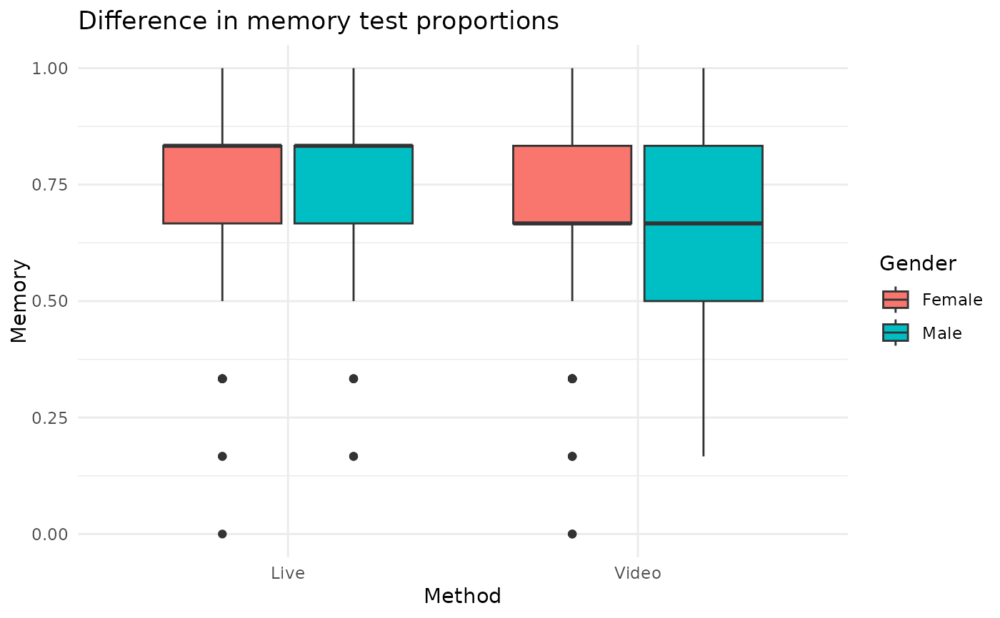

Data was collected from 276 students in a university psychology course to determine the effect of lecture delivery method on learning. Students were presented a live lecture by the professor on one day and a pre-recorded lecture on a different topic by the same professor on a different day. Survey data was collected during the lectures to determine mind wandering, interest, and motivation. Students were also ultimately asked about the preferred lecture delivery method. Finally, students completed an assessment at the end of the lecture to determine memory recall.
Format
A data frame with 552 rows and 8 variables.
- student
Identification number of a specific student. Each identification appears twice because same student heard both lecture delivery methods.
- gender
Gender of student. Recored a binary variable with levels Male and Female in the study.
- method
Delivery method of lecture was either in-person(Live) or pre-recorded(Video).
- mindwander
An indicator of distraction during the lecture. It is a proportion of six mind wandering probes during the lecture when a student answered yes that mind wandering had just occurred.
- memory
An indicator of recall of information provided during the lecture. It is the proportion of correct answers in a six question assessment given at the end of the lecture presentation.
- interest
A Likert scale that gauged student interest level concerning the lecture.
- motivation_both
After experiencing both lecture delivery methods, students were asked about which method they were most motivated to remain attentive.
- motivation_single
After a single lecture delivery experience, this Likert scale was used to gauge motivation to remain attentive during the lecture.
Examples
library(dplyr)
library(ggplot2)
# Calculate the average memory test proportion by lecture delivery method
# and gender.
lecture_learning |>
group_by(method, gender) |>
summarize(average_memory = mean(memory), count = n(), .groups = "drop")
#> # A tibble: 4 × 4
#> method gender average_memory count
#> <chr> <chr> <dbl> <int>
#> 1 Live Female 0.740 180
#> 2 Live Male 0.750 96
#> 3 Video Female 0.704 180
#> 4 Video Male 0.686 96
# Compare visually the differences in memory test proportions by delivery
# method and gender.
ggplot(lecture_learning, aes(x = method, y = memory, fill = gender)) +
geom_boxplot() +
theme_minimal() +
labs(
title = "Difference in memory test proportions",
x = "Method",
y = "Memory",
fill = "Gender"
)

# Use a paired t-test to determine whether memory test proportion score
# differed by delivery method. Note that paired t-tests are identical
# to one sample t-test on the difference between the Live and Video methods.
learning_diff <- lecture_learning |>
tidyr::pivot_wider(id_cols = student, names_from = method, values_from = memory) |>
mutate(time_diff = Live - Video)
t.test(time_diff ~ 1, data = learning_diff)
#>
#> One Sample t-test
#>
#> data: time_diff
#> t = 2.8344, df = 275, p-value = 0.004932
#> alternative hypothesis: true mean is not equal to 0
#> 95 percent confidence interval:
#> 0.01398032 0.07756171
#> sample estimates:
#> mean of x
#> 0.04577101
#>
# Calculating the proportion of students who were most motivated to remain
# attentive in each delivery method.
lecture_learning |>
count(motivation_both) |>
mutate(proportion = n / sum(n))
#> # A tibble: 4 × 3
#> motivation_both n proportion
#> <chr> <int> <dbl>
#> 1 Equally Motivated 150 0.272
#> 2 Live 322 0.583
#> 3 Video 58 0.105
#> 4 NA 22 0.0399